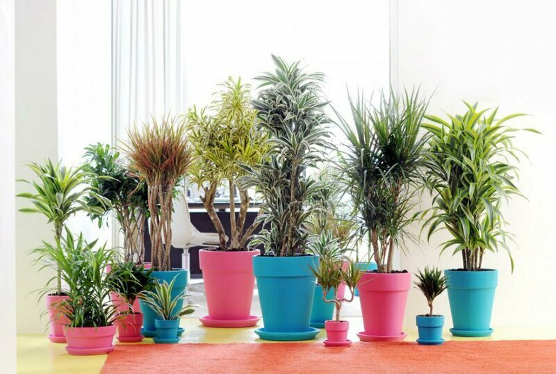
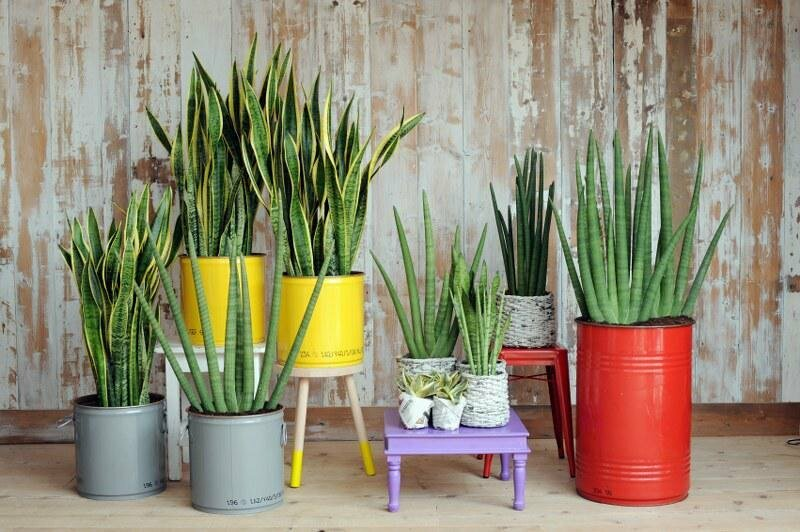

Drakenbloedboom (Dracaena)
Een makkelijke kamerplant die met weinig licht tevreden is en dus zelfs bij een raam op het noorden kan staan.
Laat de potgrond tussen twee gietbeurten altijd uitdrogen.
Haalt vooral xyleen, formaldehyde en trichloorethyleen uit de lucht

Een makkelijke kamerplant die met weinig licht tevreden is en dus zelfs bij een raam op het noorden kan staan.
Laat de potgrond tussen twee gietbeurten altijd uitdrogen.
Haalt vooral xyleen, formaldehyde en trichloorethyleen uit de lucht
Vrouwentongen (Sansevieria)
Een overbekende kamerplant die het goed doet in de schaduw én die in tegenstelling tot andere kamerplanten s nachts koolstofdioxide omzet in zuurstof.
Ideaal groen voor in de slaapkamer.
Haalt zowat alle eerder opgesomde chemische stoffen uit de lucht.

Een overbekende kamerplant die het goed doet in de schaduw én die in tegenstelling tot andere kamerplanten s nachts koolstofdioxide omzet in zuurstof.
Ideaal groen voor in de slaapkamer.
Haalt zowat alle eerder opgesomde chemische stoffen uit de lucht.
Calathea is echt een parel van een tropenplant. Ze is opgegroeid in de
bossen van Brazilië en Colombia en dat is waar ze haar bijnaam de
schaduwplant heeft gekregen. Overdag laat ze haar schoonheid zien, maar als
de zon ondergaat sluit ze haar bladeren en wordt ze een echte schone
slaapster. Als ze te veel zonlicht krijgt, vervagen haar prachtige bladeren
en dus is ze perfect om je zieligste hoekje wat jeu te geven.